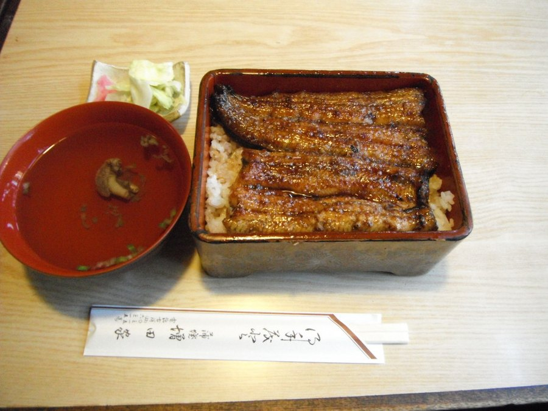
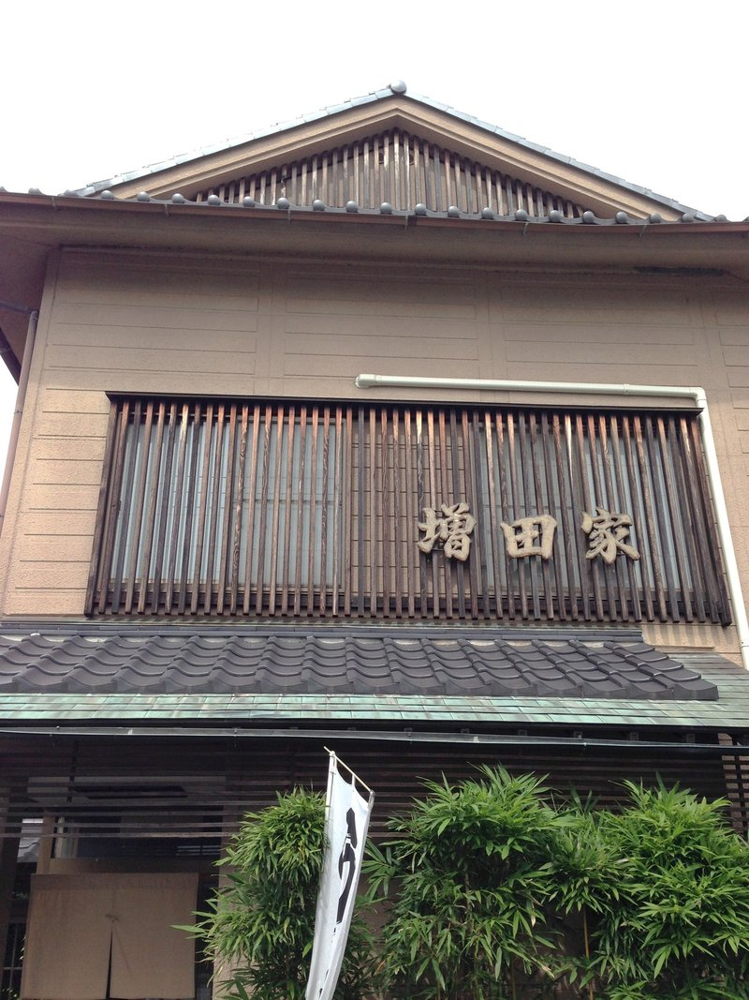

ご予約・出前のご注文は、お電話で承ります。
上・特上・極上の三段。肝吸いとお新香を添えてお出しします。

たれで焼き上げる蒲焼と、たれをつけない白焼き。どちらも上・特上でご用意しております。
並・上・特上。
ビールと日本酒のほか、ウーロン茶やジュース、ラムネもございます。
うな重と天重は古河市近郊へお届けしております。お弁当は事前のご予約で、ご予算に応じてお作りいたします。どちらも前もってお電話ください。
